The CornShark Community
User Comments
User Comments
"I started to play just so I could see the new fish, but then I couldn't
stop playing until I reached Level 16. Very fun and addicting."
-- Ross S.
"My daughter plays CornShark every day. She loves it so much,
she begged me to make it one of the activities at her birthday party."
-- Sarah K.
"It's such a fun, cute game! I can't wait until it's finished."
-- Michelle H.
"I 'heart' CornShark."
-- Katie F.
"It's pretty cool. Weird, but cool."
-- Kathy B.
"It is adorable."
-- Morgan T.
"I wondered how you were going to top Barn Nazi."
-- Kevin L.
"It'll never be as good as Barn Nazi. You're a one-hit wonder."
-- Ralph N.
Fan Art | |
| 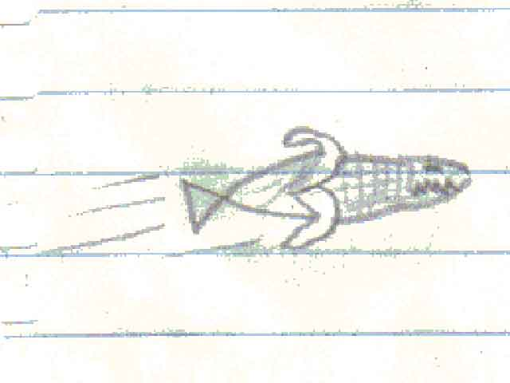 | 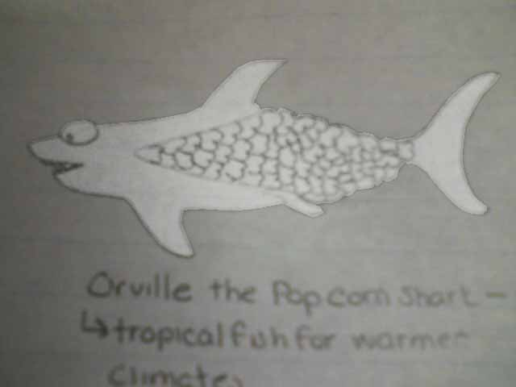 |
| The very first CornShark fan art was hand drawn by my awesome bro-in-law, Kevin. I love this! | Morgan Trousdale envisioned what might happen to a CornShark if he strayed too far into the tropics. Introducing Orville the Popcorn Shark! |
...and Other Stuff | |
| 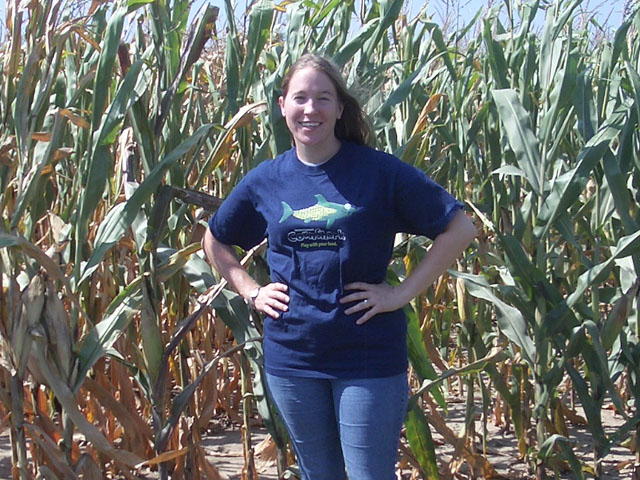 | Do YOU want a CornShark T-shirt of your very own? |
| My beautiful wife Michelle shows off her ultra-cool CornShark T-shirt as she models it in front of a lovely Nebraska cornfield. | E-mail me and let me know! |
| 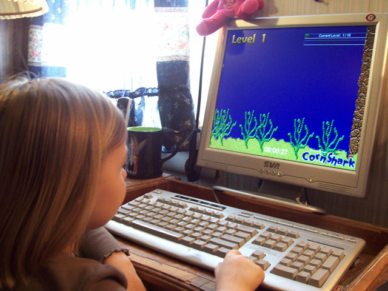 | 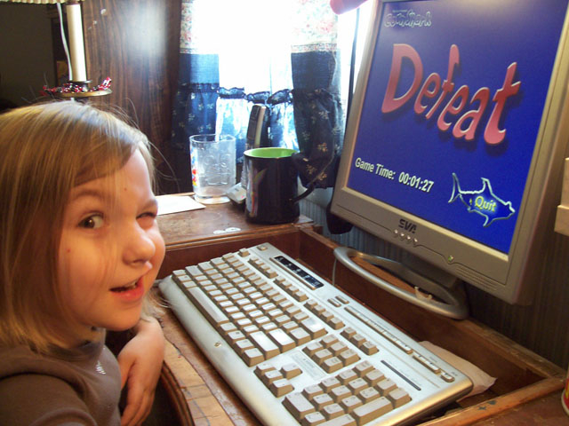 |
| Four-year-old Tatyana may be CornShark's youngest fan. According to her mother Jessica, "She plays it daily!" | However, young Ty has yet to master the game. |
| 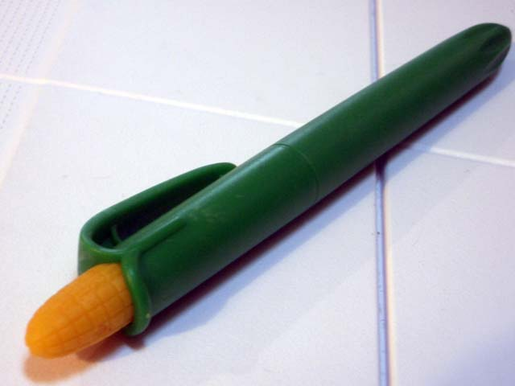 | 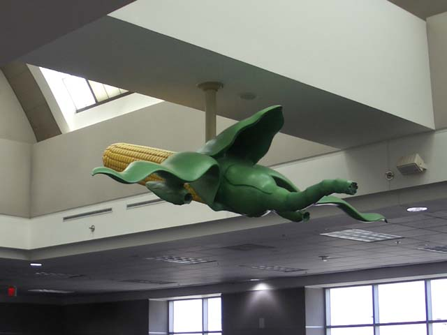 |
| My friend Ginger gave me this cool biodegradable corn pen because she said it reminded her of CornShark. There's definitely a resemblance! | Another sight that brings to mind our hero -- a corn plane! Michelle saw this at the Atlanta, GA airport and her first thought was, "What is CornShark doing on the ceiling of an airport?" |
| 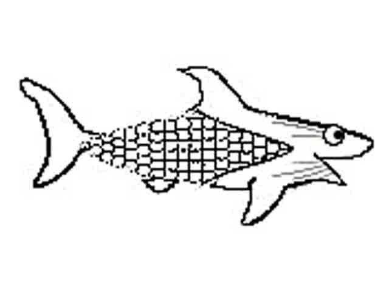 | 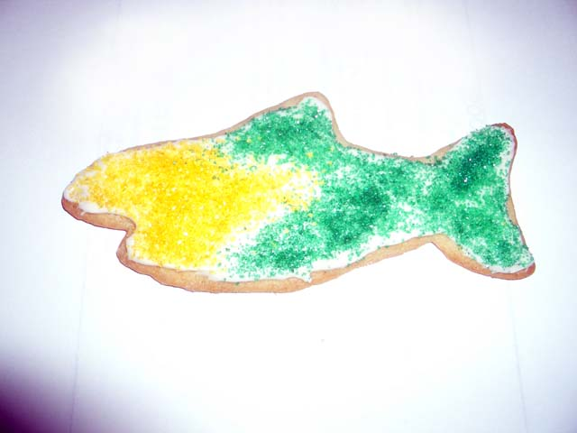 |
| This was the very first concept sketch I made of the CornShark. I think everyone agrees that he looks much better in his current incarnation. | My awesomely creative and talented wife Michelle made these super delicious CornShark sugar cookies. Mmm! |
| 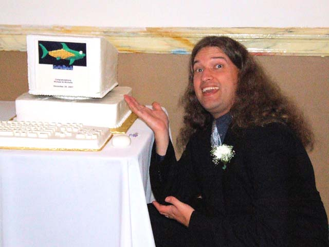 | 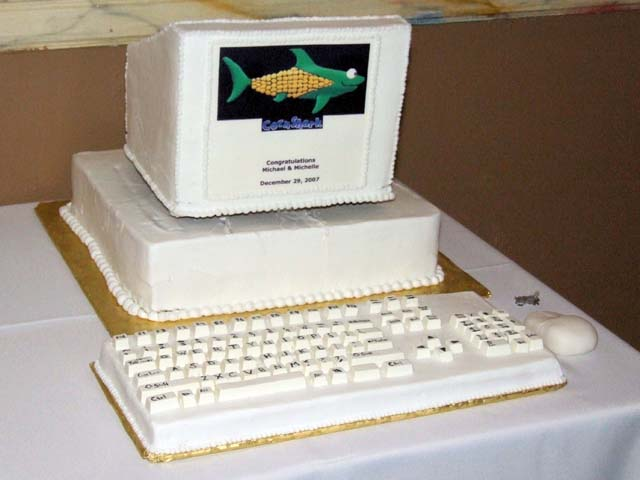 |
| Michelle surprised me at our wedding reception with this computer-shaped groom's cake with the CornShark character and game logo on the screen. The cake was made by Gwenn Buesching, and it tasted every bit as great as it looks. | Here's a closeup of the computer cake showing the detail in the keyboard and the mouse on the side. Isn't that extremely cool? Thank you, Michelle, and thank you, Gwenn! |